Salah satu bagian penting dalam aplikasi mobile adalah kemampuan menangkap masukan (input) dari pengguna, misalnya melalui formulir (form). Di Flutter, form dibangun dari beberapa pilar utama: widget Form yang dipasangkan dengan GlobalKey sebagai wadah untuk memvalidasi banyak input sekaligus, TextFormField sebagai kolom teks yang mendukung validasi terintegrasi, dan TextEditingController sebagai pengendali untuk membaca teks yang diketik pengguna.
Agar data yang masuk sesuai format yang diharapkan, setiap kolom input dapat diberi fungsi validator. Fungsi ini akan mengembalikan null apabila data valid (tidak ada error), atau mengembalikan sebuah String berisi pesan error apabila data tidak valid, yang kemudian ditampilkan berwarna merah di bawah kolom. Pada praktikum ini, mahasiswa membuat halaman baru add_transaction_screen.dart untuk mencatat transaksi baru pada aplikasi Expense Tracker, lengkap dengan kolom judul transaksi, nominal, dropdown kategori, serta tombol simpan yang memicu validasi menggunakan _formKey.currentState!.validate().
TextEditingController.DropdownButtonFormField).Buat file baru add_transaction_screen.dart berisi class AddTransactionScreen yang extends StatefulWidget. Digunakan StatefulWidget karena isi formulir, baik teks maupun pilihan dropdown, akan terus berubah selama pengguna mengetik atau memilih opsi. Di dalam class state-nya, yaitu _AddTransactionScreenState, disiapkan final _formKey = GlobalKey<FormState>() yang berfungsi sebagai kunci untuk mengontrol widget Form sekaligus memicu seluruh validator di dalamnya secara bersamaan.
Selanjutnya disiapkan dua TextEditingController, yaitu _titleController untuk membaca judul transaksi dan _amountController untuk membaca nominal. Ditambahkan pula variabel String selectedCategory = 'Makanan' sebagai nilai awal dropdown dan List<String> categories berisi daftar pilihan kategori. Method dispose() di-override untuk memanggil .dispose() pada setiap controller ketika halaman ditutup, agar tidak terjadi memory leak.
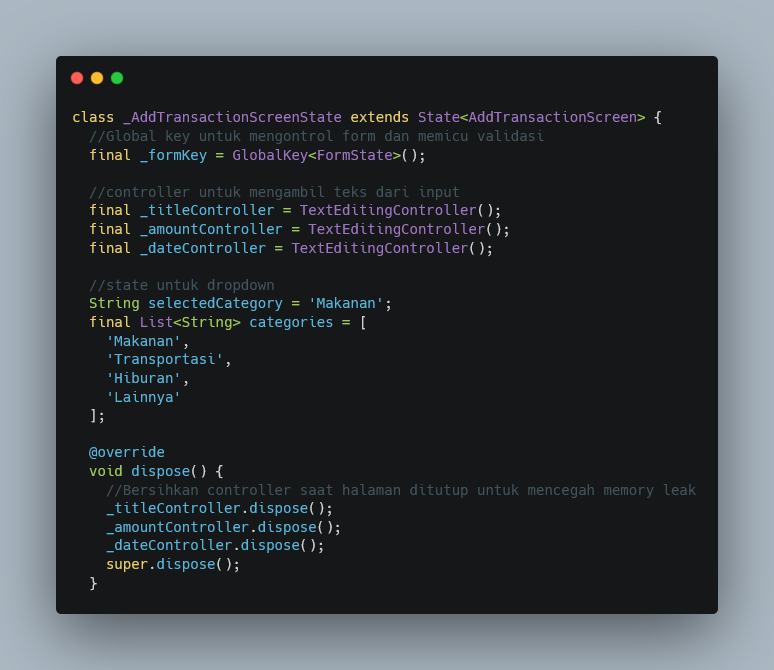
Seluruh kolom input dibungkus dengan widget Form yang propertinya key dihubungkan ke _formKey, lalu di dalamnya digunakan Column untuk menyusun kolom-kolom secara vertikal. Kolom pertama adalah TextFormField untuk judul transaksi dengan controller: _titleController, dekorasi InputDecoration berisi labelText dan prefixIcon, serta validator yang mengembalikan pesan error jika nilainya kosong.
Kolom kedua adalah TextFormField untuk nominal dengan controller: _amountController dan keyboardType: TextInputType.number agar keyboard yang muncul berupa keyboard angka. Pada validator-nya, selain memeriksa apakah kolom kosong, juga digunakan double.tryParse(value) untuk memastikan nilai yang diketik benar-benar berupa angka; jika hasilnya null, berarti data bukan angka yang valid dan pesan error ditampilkan. Widget SizedBox(height: 16.0) disisipkan di antara kolom sebagai jarak vertikal.
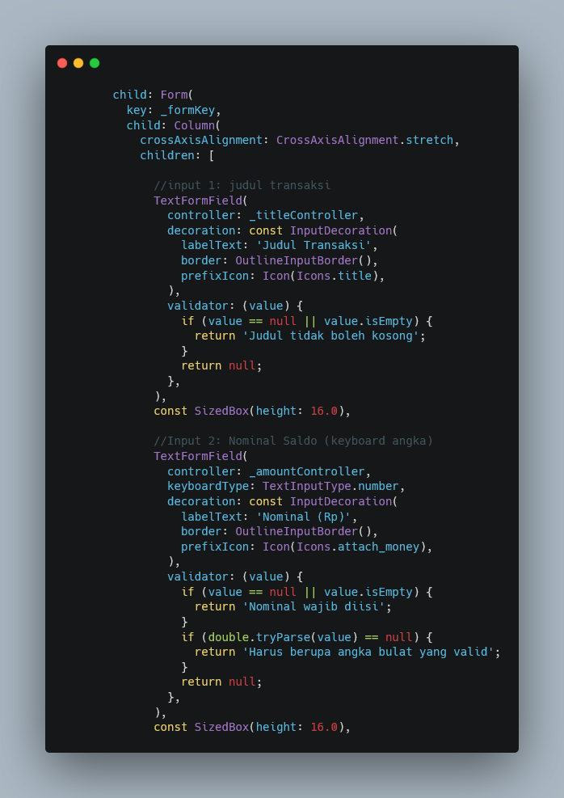
Kolom kategori dibuat menggunakan DropdownButtonFormField<String> dengan value: selectedCategory sebagai nilai yang sedang dipilih. Daftar opsinya dibuat dari categories.map(...) yang mengubah setiap kategori menjadi DropdownMenuItem. Pada onChanged, nilai baru yang dipilih pengguna disimpan kembali ke selectedCategory di dalam setState() agar tampilan dropdown diperbarui sesuai pilihan.
Tombol simpan dibuat dengan ElevatedButton yang diberi gaya melalui ElevatedButton.styleFrom (warna latar Colors.deepPurple dan warna teks putih). Pada onPressed, dipanggil _formKey.currentState!.validate() yang akan menjalankan seluruh fungsi validator pada setiap TextFormField secara bersamaan. Apabila seluruh input valid (mengembalikan true), maka ScaffoldMessenger.of(context).showSnackBar(...) dipanggil untuk menampilkan notifikasi berwarna hijau berisi ringkasan data yang tersimpan; apabila ada input yang tidak valid, pesan error otomatis muncul di bawah kolom terkait dan data tidak disimpan.
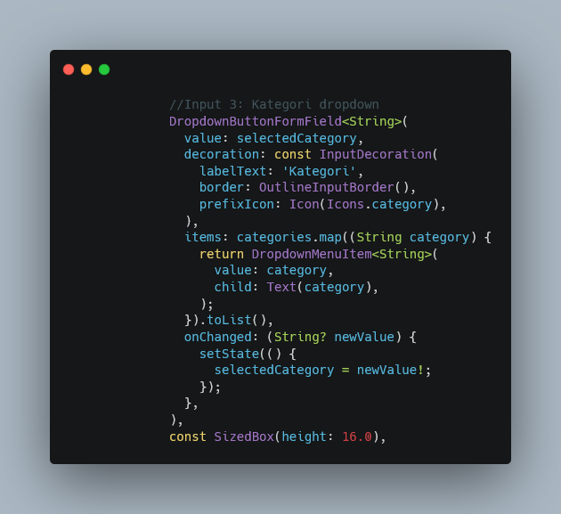
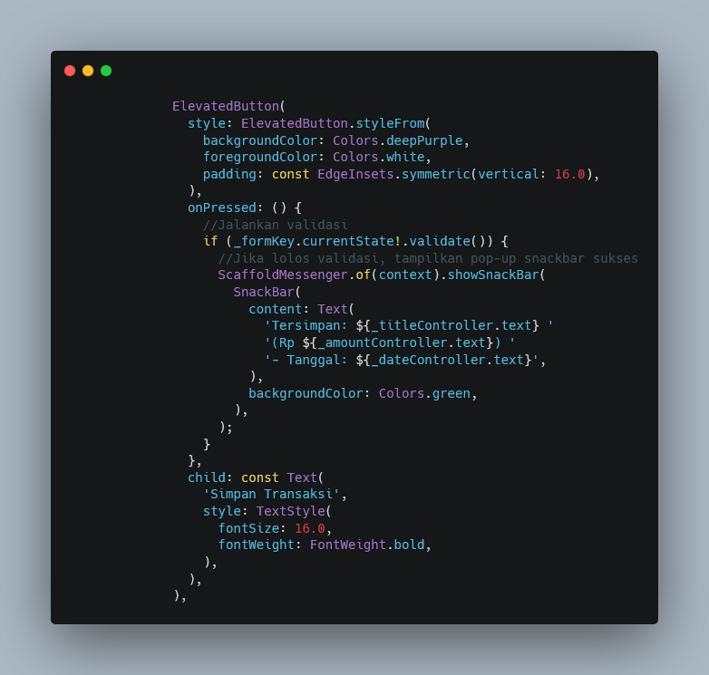
Pada praktikum ini, file main.dart disederhanakan agar aplikasi langsung membuka halaman form saat dijalankan. Baris import 'add_transaction_screen.dart'; digunakan untuk memanggil file yang telah dibuat sebelumnya sehingga class AddTransactionScreen dapat digunakan di dalam main.dart.
Fungsi void main() tetap memanggil runApp(const MyApp()) sebagai titik awal aplikasi. Class MyApp yang merupakan StatelessWidget mengembalikan MaterialApp dengan debugShowCheckedModeBanner: false, title: 'Expense Tracker Modul 3', dan theme: ThemeData(primarySwatch: Colors.deepPurple) sebagai warna tema baru pada modul ini. Yang membedakan dari modul sebelumnya adalah properti home yang kini langsung diarahkan ke const AddTransactionScreen(), sehingga halaman form transaksi menjadi halaman pertama yang tampil ketika aplikasi dibuka, bukan halaman dashboard.
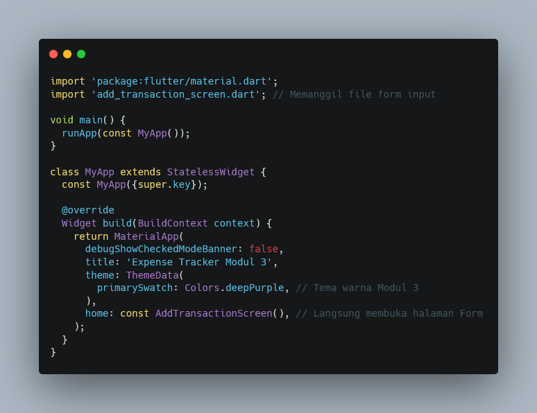
Setelah seluruh langkah selesai, simpan kedua file kemudian jalankan aplikasi dengan perintah flutter run. Aplikasi akan langsung menampilkan halaman "Catat Transaksi Baru" berisi kolom Judul Transaksi, Nominal, dropdown Kategori, dan tombol Simpan Transaksi. Apabila tombol ditekan tanpa mengisi salah satu kolom, atau nominal diisi dengan huruf, maka pesan error berwarna merah akan muncul di bawah kolom yang bersangkutan. Apabila seluruh kolom terisi dengan benar, notifikasi hijau berisi ringkasan data yang tersimpan akan muncul di bagian bawah layar.
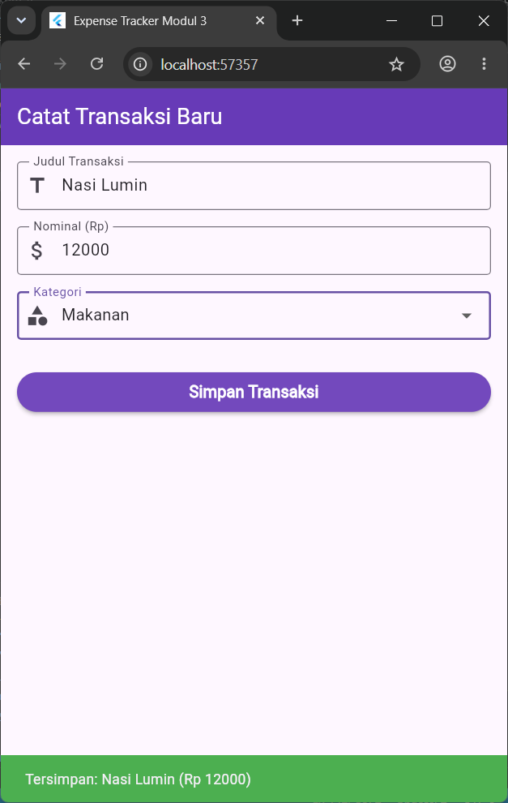
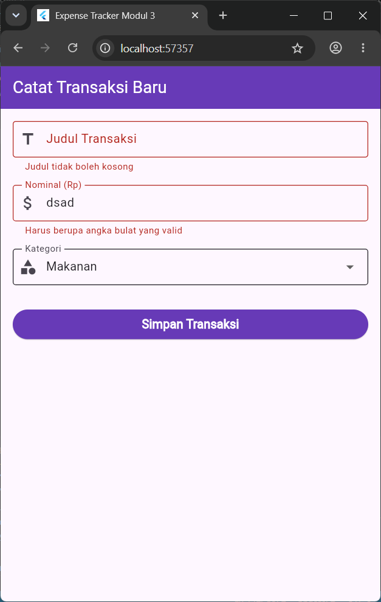
Tugas pada praktikum ini adalah menambahkan satu input baru sebelum tombol Simpan untuk mengisi Tanggal Transaksi, menggunakan TextFormField biasa dengan format teks DD/MM/YYYY, memanfaatkan fungsi showDatePicker sebagai nilai tambah, dan diberikan validasi wajib diisi.
Ditambahkan satu controller baru, yaitu final _dateController = TextEditingController();, yang berfungsi menyimpan dan menampilkan teks tanggal yang telah dipilih pengguna. Controller ini juga ditambahkan ke dalam method dispose() agar ikut dibersihkan ketika halaman ditutup, sama seperti dua controller sebelumnya.
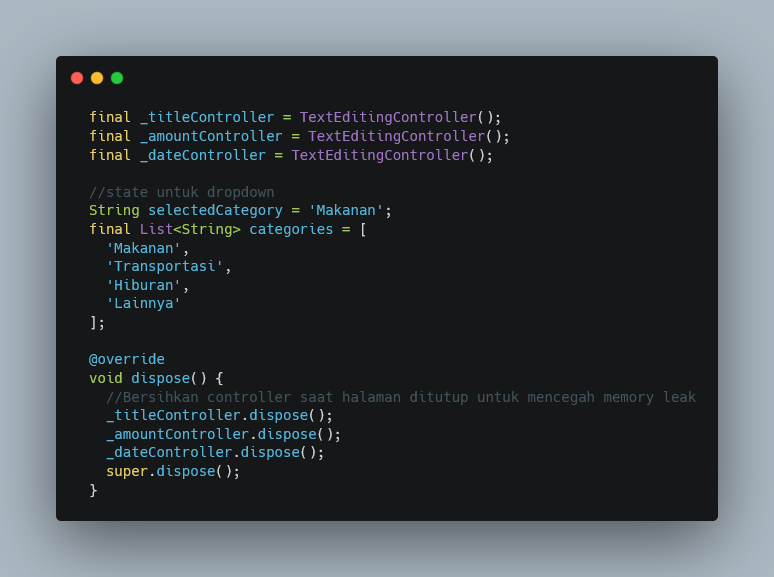
Dibuat sebuah fungsi Future<void> _selectDate(BuildContext context) async yang memanggil showDatePicker bawaan Flutter untuk menampilkan kalender pemilihan tanggal. Parameter initialDate: DateTime.now() menjadikan tanggal hari ini sebagai tampilan awal kalender, sedangkan firstDate dan lastDate membatasi rentang tanggal yang dapat dipilih, yaitu dari tahun 2000 hingga 2100.
Nilai yang dipilih pengguna ditampung dalam variabel final DateTime? pickedDate. Apabila pengguna benar-benar memilih tanggal (pickedDate != null), maka di dalam setState() nilai tersebut diformat ulang menjadi teks DD/MM/YYYY menggunakan pickedDate.day, pickedDate.month, dan pickedDate.year. Method .padLeft(2, '0') digunakan pada tanggal dan bulan agar angka satu digit tetap ditampilkan dengan dua digit (misalnya "05" bukan "5"), lalu hasilnya dimasukkan ke _dateController.text.
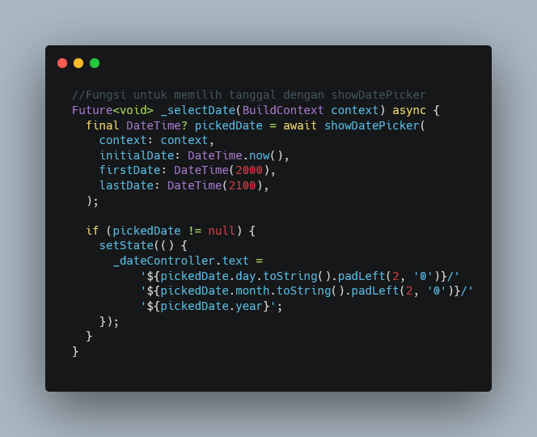
Sebelum tombol Simpan, ditambahkan kolom TextFormField baru dengan controller: _dateController dan readOnly: true, sehingga pengguna tidak bisa mengetik langsung pada kolom ini dan hanya dapat mengisi tanggal melalui kalender. Pada InputDecoration, diberikan labelText: 'Tanggal Transaksi', hintText: 'DD/MM/YYYY' sebagai contoh format, dan prefixIcon: Icon(Icons.calendar_today) sebagai penanda visual kolom tanggal.
Di sisi kanan kolom ditambahkan suffixIcon berupa IconButton dengan ikon Icons.add (tombol plus). Pada properti onPressed tombol ini, dipanggil fungsi _selectDate(context) sehingga saat tombol plus ditekan, kalender showDatePicker akan terbuka dan tanggal yang dipilih otomatis mengisi kolom. Terakhir, ditambahkan validator yang mengembalikan pesan "Tanggal wajib diisi" apabila nilai _dateController masih kosong, sehingga kolom ini ikut divalidasi bersama kolom lain saat tombol Simpan ditekan melalui _formKey.currentState!.validate().
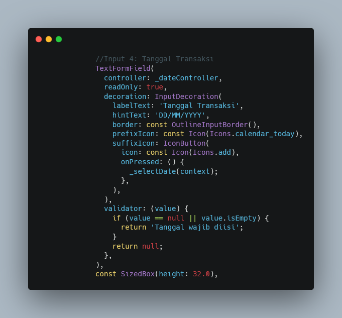
Isi SnackBar pada tombol Simpan disesuaikan agar turut menampilkan tanggal yang telah dipilih, dengan menambahkan '- Tanggal: ${_dateController.text}' pada teks ringkasan yang muncul setelah _formKey.currentState!.validate() bernilai true. Dengan demikian, notifikasi sukses menampilkan judul, nominal, dan tanggal transaksi sekaligus.
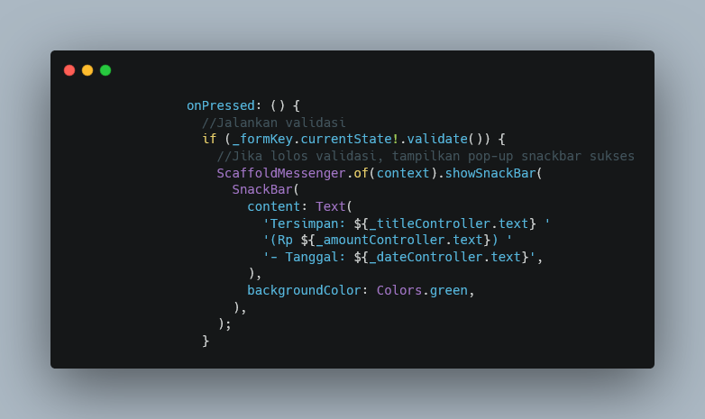
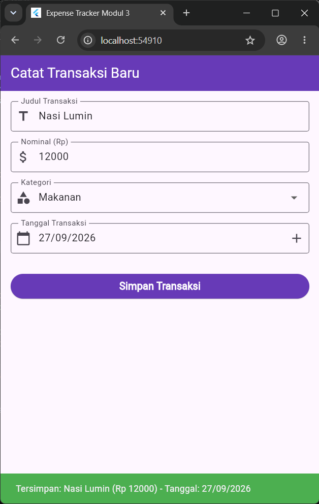
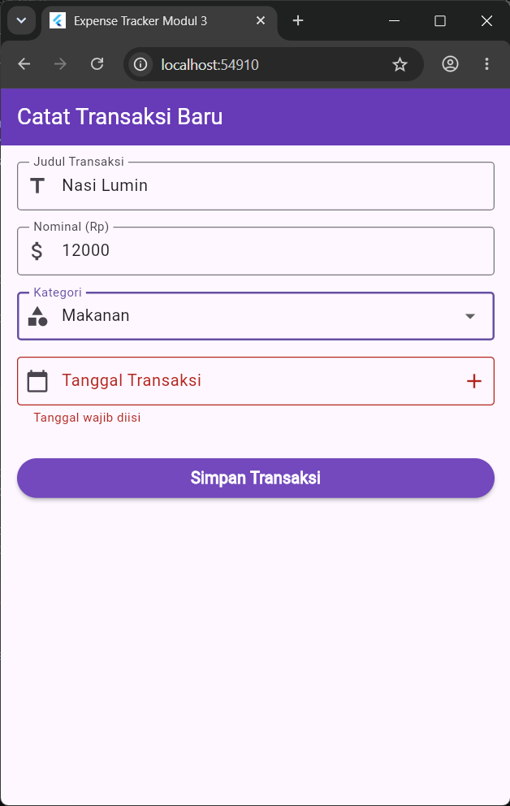
Berdasarkan praktikum yang telah dilakukan, dapat disimpulkan bahwa formulir input pada Flutter dibangun dari kombinasi Form, GlobalKey, TextFormField, dan TextEditingController yang bekerja sama untuk menangkap dan memvalidasi data dari pengguna.
Fungsi validator memastikan data yang dimasukkan sesuai format yang diharapkan sebelum diproses lebih lanjut, sedangkan DropdownButtonFormField memudahkan pengguna memilih salah satu opsi dari daftar yang telah ditentukan.
Penambahan fitur pemilihan tanggal melalui showDatePicker menunjukkan bagaimana Flutter menyediakan komponen bawaan yang dapat dikombinasikan dengan TextFormField untuk menghasilkan input yang lebih aman dan konsisten formatnya.
Dengan memahami konsep ini, mahasiswa dapat merancang formulir input yang informatif, tervalidasi, dan nyaman digunakan.